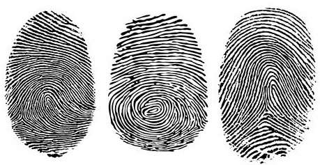

A person cannot be convicted of a crime simply because the police believe that he or she is guilty. The only way to convict a person successfully of a criminal act is by obtaining evidence that proves the individual committed the crime - this is known as the "burden of proof" . The more compelling the evidence presented in court, the greater the chance that the individual will be found guilty of the alleged crime. This is an increasingly important concept for people to understand because many people have been exposed to popular television shows and media reports that use forensics to solve crimes. People on juries today have high expectations of evidence presented to them during criminal trials. Therefore, criminal investigators collect as much useful evidence as possible and have it rigorously analyzed by credible scientific experts to determine its validity accurately.
Fingerprint collection and fingerprint pattern analysis have been used to apprehend and convict criminals for over 100 years. Because individual fingerprint patterns are unique, fingerprints distinguish one person from another.
The following information will: